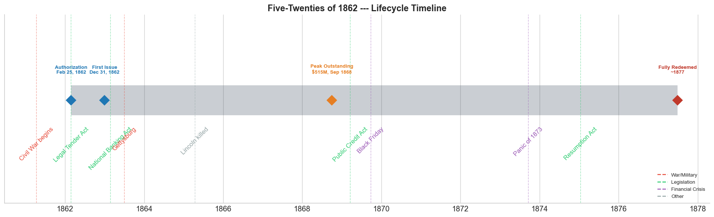
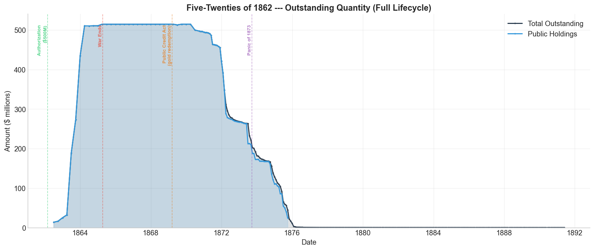
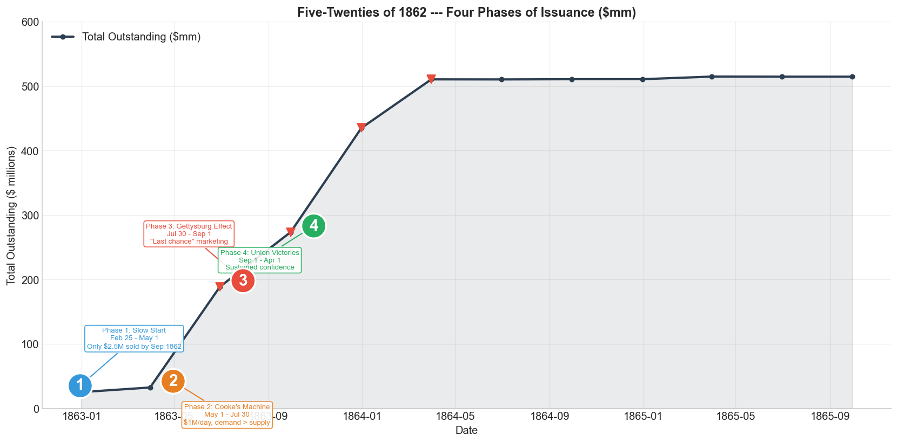
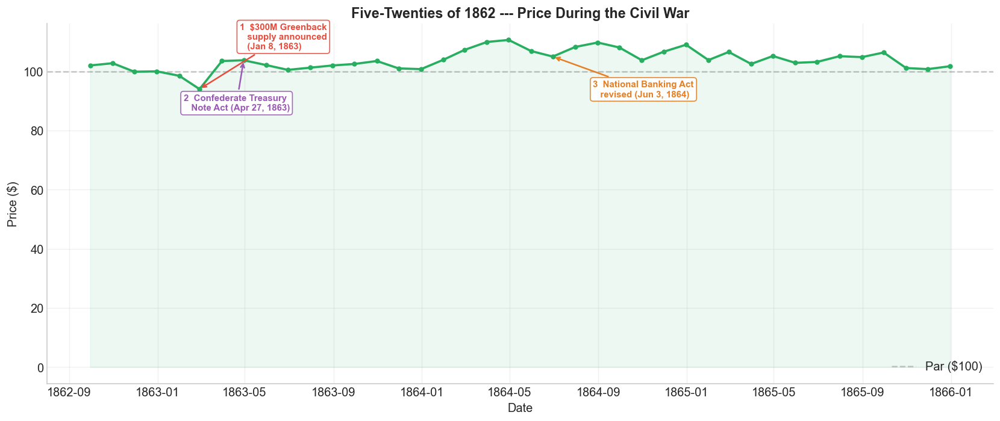
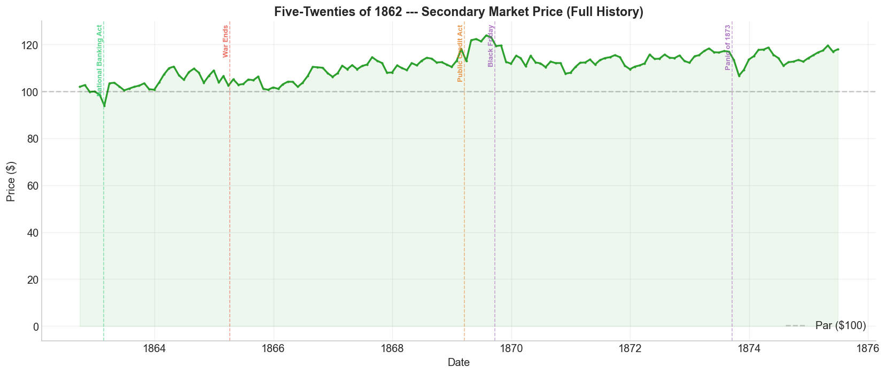
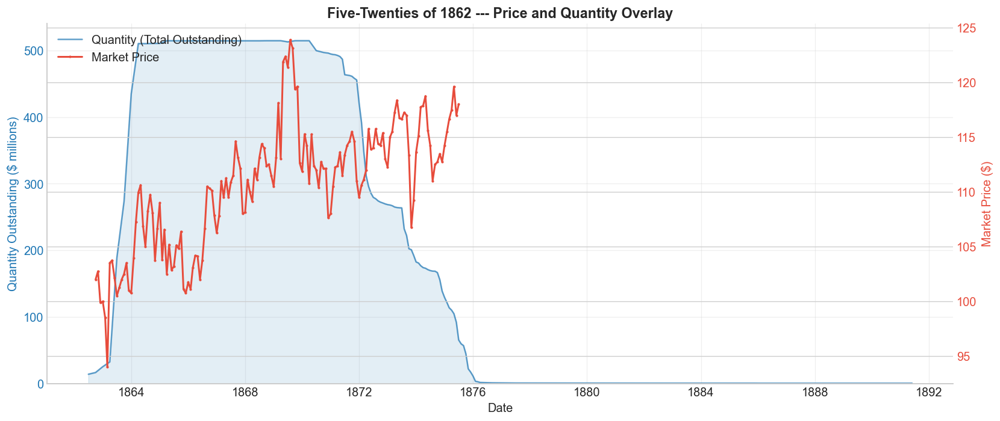
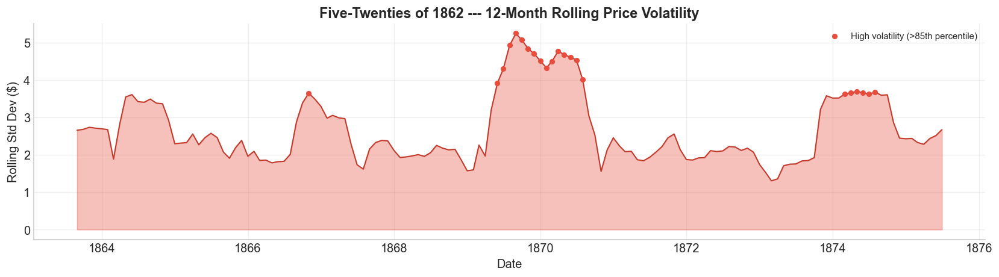

Bond Biography: Five-Twenties of 1862#
The Bond That Saved the Union#
Enhanced from the Hall-Payne-Sargent US Federal Bond Database (2,857 issues, 1776–1960)
Bond ID (L1): 20101
Category: Interest Bearing > Marketable > Long Term Bond
Coupon: 6% semi-annual, payable in coin
Term: 5-year call / 20-year maturity
Authorization: $500,000,000 under the Legal Tender Act of February 25, 1862
“Congress has provided that the Bonds shall be PAID in Gold when due.”
— Jay Cooke, in a letter to a prospective investor, 1868
import pandas as pd
import numpy as np
import matplotlib.pyplot as plt
import matplotlib.patches as mpatches
import matplotlib.dates as mdates
import datetime
import datetime as dt
import warnings
warnings.filterwarnings('ignore')
plt.style.use('seaborn-v0_8-whitegrid')
plt.rcParams.update({
'figure.figsize': (14, 7),
'font.size': 12,
'axes.titlesize': 15,
'axes.labelsize': 12,
'figure.dpi': 120,
'axes.spines.top': False,
'axes.spines.right': False,
})
# ------------------------------------------------------------------
# Load the bond database
# ------------------------------------------------------------------
store = pd.HDFStore('../data/BondDF.h5', mode='r')
BondList = store['BondList']
BondQuant = store['BondQuant']
BondPrice = store['BondPrice']
store.close()
BondQuant_T = BondQuant.transpose()
BondPrice_T = BondPrice.transpose()
bond_id = 20101
print(f"Loaded Hall-Payne-Sargent Bond Database")
print(f" Bond universe : {len(BondList):,} issues")
print(f" Target bond : Five-Twenties of 1862 (ID {bond_id})")
/Users/thomassargent/anaconda3/lib/python3.9/site-packages/pandas/core/arrays/masked.py:60: UserWarning: Pandas requires version '1.3.6' or newer of 'bottleneck' (version '1.3.5' currently installed).
from pandas.core import (
Loaded Hall-Payne-Sargent Bond Database
Bond universe : 2,857 issues
Target bond : Five-Twenties of 1862 (ID 20101)
A Half-Billion Dollar Gamble#
In the winter of 1862, the United States of America was losing its war and running out of money. The Treasury had already burned through a generation’s worth of conventional financing — loans from New York banks, short-term Treasury notes at punishing rates, even the unprecedented experiment of printing unbacked “greenback” paper dollars. None of it was enough. The Union war machine consumed roughly $2 million per day, and the casualty lists from Shiloh, Antietam, and Fredericksburg grew longer with each dispatch.
On February 25, 1862, President Lincoln signed the Legal Tender Act. Buried within this famous legislation — the act that created the greenback — was an authorization for something equally revolutionary: a new class of government bond, authorized for the staggering sum of **\(500 million**. To put that figure in perspective, the entire federal budget in 1860 had been \)63 million. The government was now asking the public to lend it nearly eight times a single year’s expenditures.
These were the Five-Twenties — so named because they carried a 20-year maturity with a 5-year call option. They paid a 6 percent coupon, semi-annually, in gold coin. They could be purchased in depreciated greenbacks. And they would be sold not through the staid mechanisms of Wall Street, but through the most audacious financial marketing campaign the world had ever seen, orchestrated by a man who would become America’s first true bond salesman: Jay Cooke.
This is the story of how a single bond issue helped save a nation, reshaped American finance, ignited a furious political debate over the very meaning of money, and ultimately destroyed the man who created it.
Bond Features#
Feature |
Detail |
|---|---|
Name |
Five-Twenties of 1862 |
Authorizing Act |
Legal Tender Act, February 25, 1862 |
Authorization Date |
February 25, 1862 |
First Issue Date |
December 31, 1862 |
Term |
5-year call / 20-year maturity |
Coupon Rate |
6.0% per annum |
Payment Frequency |
Semi-annual (in gold coin) |
Callable |
Yes (after 5 years, at par) |
Payable in Coin |
Coupons: Yes. Principal: deliberately ambiguous |
Authorized Amount |
$500,000,000 |
Denominations |
\(50, \)100, \(500, \)1,000, \(5,000, \)10,000 |
Price Sold |
~100.355 (slight premium) |
Peak Outstanding |
$514.77 million (September 30, 1868) |
Final Redemption |
All redeemed by 1877 |
# Display full bond features from database
row = BondList.loc[20101]
display_cols = [
"Treasury's Name Of Issue", 'Authorizing Act', 'Term Of Loan',
'First Issue Date', 'First Redemption Date', 'Final Redemption Date',
'Coupon Rate', 'Coupons Per Year', 'Callable', 'Coin',
'Authorized Amount', 'Price Sold'
]
print("Bond Features from Database")
print("=" * 60)
for col in display_cols:
if col in row.index:
print(f" {col:<35} {row[col]}")
Bond Features from Database
============================================================
Treasury's Name Of Issue Five-Twenties of 1862
Authorizing Act February 25, 1862
Term Of Loan 5 or 20 yrs
First Issue Date 1862-12-31 00:00:00
First Redemption Date NaT
Final Redemption Date NaT
Coupon Rate 6.0
Coupons Per Year 2.0
Callable 1.0
Coin 2.0
Authorized Amount nan
Price Sold 1.00355
I. A Nation on the Brink of Bankruptcy#
The federal government was virtually bankrupt even before the first shots were fired at Fort Sumter. By December 1860, when Congress convened, the Treasury was depleted. There were no funds to pay public creditors or even the salaries of Congress members. The Buchanan administration had so thoroughly undermined national credit that when the government did manage to issue bonds late in 1860, it had to offer a ruinous 12 percent interest rate to attract any buyers at all.
The Domestic Problem#
Banks were reluctant. The scale of the Union’s borrowing needs was simply beyond anything the existing financial system had ever contemplated. New York’s banks, the largest concentration of capital in America, had already been burned by the suspension of specie payments in December 1861. They had subscribed to earlier war loans only to watch the value of those securities decline as military setbacks mounted. The idea of absorbing hundreds of millions more in government debt, at a time when the Union’s survival was genuinely uncertain, was unpalatable.
The Foreign Problem#
Nor was there a foreign market for American debt. Many British financiers and their clients had substantial investments in the South, particularly in slavery and cotton production. The textile mills of Manchester and Liverpool depended on Southern cotton; the counting houses of the City of London held Southern commercial paper. British sympathies, at least among the financial elite, tilted toward the Confederacy. A Union bond offering was unlikely to find enthusiastic reception on Lombard Street.
France was even more hostile. Napoleon III prohibited the sale of U.S. bonds on the Paris Stock Exchange outright, hoping for a Confederate victory that would provide France with a strategic ally and a divided, weakened United States as a buffer. Without the financial markets of London or Paris, the United States had to look inward.
The Five-Twenties, then, were born of desperation — a government that could not borrow abroad, could not borrow enough from its own banks, and was burning cash faster than it could print greenbacks. The solution would require selling bonds not to bankers, but to the people themselves.
II. Historical Context#
The Five-Twenties of 1862 lived through some of the most consequential years in American history. The following major events bracket its life:
Date |
Event |
Category |
|---|---|---|
1861-04-12 to 1865-04-09 |
Civil War |
War |
1862-02-25 |
Legal Tender Act (greenbacks authorized) |
Legislation |
1862-07-01 |
Pacific Railway Act |
Legislation |
1863-01-08 |
$300M additional greenback supply announced |
Monetary |
1863-02-25 |
National Banking Act |
Legislation |
1863-07-01 to 1863-07-03 |
Battle of Gettysburg |
Military |
1864-06-03 |
National Banking Act (revised) |
Legislation |
1864-07-11 |
Early’s Raid reaches outskirts of Washington |
Military |
1865-04-14 |
Lincoln assassinated |
Other |
1869-03-18 |
Public Credit Act (gold redemption mandated) |
Legislation |
1869-05-10 |
Transcontinental Railroad completed |
Other |
1869-09-24 |
Black Friday gold panic |
Crisis |
1873-09-18 to 1879-03-01 |
Panic of 1873 / Long Depression |
Crisis |
1875-01-14 |
Specie Payment Resumption Act |
Legislation |
1877 |
All Five-Twenties of 1862 fully redeemed |
Resolution |
1879-01-01 |
Resumption of specie payments |
Monetary |
# ── Bond Lifecycle Timeline ──────────────────────────────────
fig, ax = plt.subplots(figsize=(16, 5))
from datetime import datetime as DT
# Bond life span
auth_date = DT(1862, 2, 25)
first_issue = DT(1862, 12, 31)
peak_date = DT(1868, 9, 30)
last_redeem = DT(1877, 6, 30)
# Draw the main bar
ax.barh(0, (last_redeem - auth_date).days, left=mdates.date2num(auth_date),
height=0.35, color='#2c3e50', alpha=0.25, label='Bond Lifetime')
# Key milestones
milestones = [
('Authorization\nFeb 25, 1862', auth_date, '#1f77b4'),
('First Issue\nDec 31, 1862', first_issue, '#1f77b4'),
('Peak Outstanding\n$515M, Sep 1868', peak_date, '#e67e22'),
('Fully Redeemed\n~1877', last_redeem, '#c0392b'),
]
for label, d, c in milestones:
ax.plot(mdates.date2num(d), 0, 'D', color=c, markersize=11, zorder=5)
ax.annotate(label, (mdates.date2num(d), 0.3), ha='center', va='bottom',
fontsize=8, fontweight='bold', color=c)
# Historical events
events = [
('Civil War begins', DT(1861, 4, 12), '#e74c3c'),
('Legal Tender Act', DT(1862, 2, 25), '#2ecc71'),
('National Banking Act', DT(1863, 2, 25), '#2ecc71'),
('Gettysburg', DT(1863, 7, 1), '#e74c3c'),
('Lincoln killed', DT(1865, 4, 14), '#95a5a6'),
('Public Credit Act', DT(1869, 3, 18), '#2ecc71'),
('Black Friday', DT(1869, 9, 24), '#9b59b6'),
('Panic of 1873', DT(1873, 9, 18), '#9b59b6'),
('Resumption Act', DT(1875, 1, 14), '#2ecc71'),
]
for name, d, c in events:
ax.axvline(mdates.date2num(d), color=c, alpha=0.45, linestyle='--', lw=0.9)
ax.annotate(name, (mdates.date2num(d), -0.3), ha='center', va='top',
fontsize=10, rotation=45, color=c)
ax.set_yticks([])
ax.xaxis.set_major_formatter(mdates.DateFormatter('%Y'))
ax.xaxis.set_major_locator(mdates.YearLocator(2))
ax.set_title('Five-Twenties of 1862 --- Lifecycle Timeline', fontsize=14, fontweight='bold')
ax.set_ylim(-1.2, 1.0)
# Legend patches
from matplotlib.lines import Line2D
legend_els = [
Line2D([0],[0], color='#e74c3c', ls='--', label='War/Military'),
Line2D([0],[0], color='#2ecc71', ls='--', label='Legislation'),
Line2D([0],[0], color='#9b59b6', ls='--', label='Financial Crisis'),
Line2D([0],[0], color='#95a5a6', ls='--', label='Other'),
]
ax.legend(handles=legend_els, loc='lower right', fontsize=8, framealpha=0.8)
plt.tight_layout()
plt.show()

III. Jay Cooke: America’s First Bond Salesman#
The success of the Five-Twenties in raising wartime capital is often credited to Treasury Secretary Salmon P. Chase. But the true architect of the campaign was Jay Cooke, a Philadelphia banker whose combination of financial acumen, political manipulation, and marketing genius made him the most important private citizen in Union war finance.
The Power Behind the Throne#
Cooke did not merely sell bonds — he built the political infrastructure that made them possible. Through intensive lobbying, Cooke helped put Chase in the Treasury Secretary’s chair, and later maneuvered Senator John Sherman (brother of General William Tecumseh Sherman) into a position of influence on financial legislation. Both men proved instrumental not only in creating the Five-Twenties, but in passing the National Banking Act of 1863, which required national banks to back their notes with federal — rather than state — bonds. This single legislative stroke created an enormous, captive market for the 5-20s (Newman, 2018).
Cooke was, in the blunt assessment of one historian, “the mastermind who put political figures into office so that he could profit off the commission of sales” (Abernathy et al., 2018).
The Marketing Machine#
When Cooke secured exclusive brokerage rights to the Five-Twenties, he unleashed a sales operation without precedent in American finance:
2,500 salesmen deployed across the Northern states, a network rivaling the Union Army’s own logistics chain
His brother Henry Cooke’s media connections ensured favorable newspaper coverage. Cooke-affiliated papers framed bond purchases as patriotic duty, not mere investment
Denominations from \(50 to \)10,000 made the bonds accessible to factory workers and farmers, not just bankers
Free coffee and donuts were offered at promotional events timed to factory shift changes, deliberately targeting the working class in early morning and late evening hours
When 5-20s were trading at 94.5 cents on the dollar in March 1863, Cooke personally bought every bond selling below par to prop up the government’s credit, demonstrating both his commitment and his considerable resources
The result was astonishing. Bond sales surged to $1 million per day. Demand became so overwhelming that, as one contemporary observer noted, “the great difficulty was to obtain enough bonds from the Treasury Department, which in turn was unable to get deliveries from the printers and engravers.”
The Promise#
In a letter to a prospective investor that would become both famous and controversial, Cooke wrote:
“Congress has provided that the Bonds shall be PAID in Gold when due.”
This was, at best, a creative interpretation. Congress had specified that coupons would be paid in coin, but had deliberately left the redemption medium of the principal ambiguous. Cooke’s bold promise would fuel a decade of political warfare over whether the 5-20s should be redeemed in gold or in depreciated greenbacks — a debate that would reshape American monetary policy. In his public statement on the payment of the 5-20 bonds, Cooke claimed that nine out of ten subscribers were “the people” — ordinary citizens, not bankers — making any betrayal of the gold promise a betrayal of the working class itself.
IV. Bond Quantity: The Full Lifecycle#
The Five-Twenties of 1862 had a dramatic life: rapid issuance during the war years, a plateau at over $500 million outstanding, and then systematic retirement and refinancing through the 1870s. Initial sales were slow, but picked up pace dramatically when Jay Cooke was engaged as broker and advertiser. Starting in 1869, the government retired most of the 5-20s bonds, refinancing them with 4.5 percent, 30-year bonds and 4 percent, 15-year bonds. By 1877, all the 5-20s bonds had been redeemed.
# ── Full lifecycle quantity chart ─────────────────────────────
fig, ax = plt.subplots(figsize=(14, 6))
for stype in ['Total Outstanding', 'Public Holdings']:
try:
s = BondQuant_T.loc[(20101, stype)]
s = s[s.notna()]
if len(s) > 0:
ax.fill_between(s.index, s.values / 1e6, alpha=0.15,
color='#2c3e50' if stype == 'Total Outstanding' else '#3498db')
ax.plot(s.index, s.values / 1e6, marker='.', markersize=3,
linewidth=1.8, label=stype,
color='#2c3e50' if stype == 'Total Outstanding' else '#3498db')
except KeyError:
pass
# Mark key phases
phase_lines = {
'1862-02-25': ('Authorization\n($500M)', '#2ecc71'),
'1865-04-09': ('War Ends', '#e74c3c'),
'1869-03-18': ('Public Credit Act\n(gold redemption)', '#e67e22'),
'1873-09-18': ('Panic of 1873', '#9b59b6'),
}
for d_str, (label, color) in phase_lines.items():
d = pd.Timestamp(d_str)
ax.axvline(d, color=color, alpha=0.5, linestyle='--', lw=1)
ax.text(d, ax.get_ylim()[1] * 0.95 if ax.get_ylim()[1] > 0 else 520,
label, rotation=90, va='top', ha='right', fontsize=8,
alpha=0.8, color=color, fontweight='bold')
ax.set_title('Five-Twenties of 1862 --- Outstanding Quantity (Full Lifecycle)',
fontsize=14, fontweight='bold')
ax.set_xlabel('Date')
ax.set_ylabel('Amount ($ millions)')
ax.legend(loc='upper right', framealpha=0.9)
ax.set_ylim(bottom=0)
ax.grid(True, alpha=0.3)
plt.tight_layout()
plt.show()

V. The Four Phases of Issuance#
The issuance of the Five-Twenties during the Civil War did not follow a smooth trajectory. Instead, it unfolded in four distinct phases, each driven by different military, political, and financial catalysts. The chart below identifies the major inflection points where quarterly issuance exceeded $10 million in new volume, and annotates the four phases with numbered markers.
# ── Four Phases of Issuance (annotated chart) ────────────────
# Replicate the creative pattern from the reference 520s.ipynb:
# identify major quantity changes (diff > 10mm) and annotate 4 key phases
fig, ax = plt.subplots(figsize=(14, 7))
# Get issuance-period quantity data
try:
s_quant = BondQuant_T.loc[(20101, 'Total Outstanding')]
s_quant = s_quant[s_quant.notna()].sort_index()
# Filter to issuance period
mask = (s_quant.index > pd.Timestamp('1862-12-01')) & (s_quant.index < pd.Timestamp('1865-12-01'))
issue_data = s_quant[mask] / 1e6 # convert to millions
issue_data = issue_data.ffill()
except KeyError:
issue_data = pd.Series(dtype=float)
if len(issue_data) > 0:
# Plot the issuance curve
ax.plot(issue_data.index, issue_data.values, linewidth=2.5, color='#2c3e50',
marker='o', markersize=5, zorder=3, label='Total Outstanding ($mm)')
ax.fill_between(issue_data.index, issue_data.values, alpha=0.1, color='#2c3e50')
# Detect big jumps (diff > 10mm) -- as done in 520s.ipynb
diffs = issue_data.diff()
big_jumps = diffs[diffs > 10]
for d, v in big_jumps.items():
ax.plot(d, issue_data.loc[d], 'v', color='#e74c3c', markersize=10, zorder=5)
# Annotate the four key phases with numbered markers
# Phase annotations based on the reference notebook's data points
annotations = {
1: (pd.Timestamp('1862-11-30'), 25,
'Phase 1: Slow Start\nFeb 25 - May 1\nOnly $2.5M sold by Sep 1862'),
2: (pd.Timestamp('1863-03-31'), 32,
"Phase 2: Cooke's Machine\nMay 1 - Jul 30\n$1M/day, demand > supply"),
3: (pd.Timestamp('1863-06-30'), 188,
'Phase 3: Gettysburg Effect\nJul 30 - Sep 1\n"Last chance" marketing'),
4: (pd.Timestamp('1863-09-30'), 273,
'Phase 4: Union Victories\nSep 1 - Apr 1\nSustained confidence'),
}
colors_phase = {1: '#3498db', 2: '#e67e22', 3: '#e74c3c', 4: '#27ae60'}
for phase_num, (date, val, text) in annotations.items():
# Place the large circled number near the data
ax.annotate(
str(phase_num),
xy=(date + pd.Timedelta(days=30), val + 10),
fontsize=18, fontweight='bold', color='white',
ha='center', va='center',
bbox=dict(boxstyle='circle,pad=0.3', fc=colors_phase[phase_num],
ec='white', lw=2),
zorder=6,
)
# Place the descriptive text nearby
offset_x = 60 if phase_num <= 2 else -60
ax.annotate(
text,
xy=(date + pd.Timedelta(days=30), val + 10),
xytext=(offset_x, 40 if phase_num % 2 == 1 else -50),
textcoords='offset points',
fontsize=8, color=colors_phase[phase_num],
ha='center', va='bottom',
arrowprops=dict(arrowstyle='->', color=colors_phase[phase_num], lw=1.2),
bbox=dict(boxstyle='round,pad=0.3', fc='white', ec=colors_phase[phase_num],
alpha=0.9),
)
ax.set_ylim(0, 600)
ax.set_title('Five-Twenties of 1862 --- Four Phases of Issuance ($mm)',
fontsize=14, fontweight='bold')
ax.set_xlabel('Date')
ax.set_ylabel('Total Outstanding ($ millions)')
ax.legend(loc='upper left', framealpha=0.9)
ax.grid(True, alpha=0.3)
else:
ax.text(0.5, 0.5, 'Quantity data not available', transform=ax.transAxes,
ha='center', fontsize=14)
plt.tight_layout()
plt.show()

Phase 1: The Slow Start (February 25 – May 1, 1863)#
The Five-Twenties were authorized for \(500 million in February 1862, but sales were glacial. By late September 1862, only **\)2.5 million** had been sold. When first issued, the bonds were brokered directly by the government and “auctioned” to bankers in the traditional manner. The 5-20s struggled to find buyers because of the sheer scale of the offering and banks’ demands for interest rates higher than the government was willing to pay. The data in our database begins in late 1862 and reflects this continuation of anemic sales.
Phase 2: Cooke’s Machine Roars to Life (May 1 – July 30, 1863)#
Everything changed when Jay Cooke was granted exclusive brokerage rights. Three reinforcing developments drove the explosion:
The Cooke brothers, through intensive lobbying, pushed through the National Banking Act of 1863, which required national banks to issue notes backed by federal rather than state bonds. This created enormous, captive demand for the Five-Twenties.
Cooke’s network of 2,500 salesmen and his brother’s newspaper connections launched a patriotic marketing blitz aimed directly at the public.
When confidence hit its nadir in March 1863 — gold prices surging, 5-20s trading at 94.5 — Cooke personally bought every bond selling below par, signaling his commitment. Sales surged to $1 million per day, demand so overwhelming that “the great difficulty was to obtain enough bonds from the Treasury Department, which in turn was unable to get deliveries from the printers and engravers.”
Phase 3: The Gettysburg Effect (July 30 – September 1, 1863)#
The Battle of Gettysburg (July 1–3, 1863) was the war’s great turning point, and the bond market felt it immediately. Investors saw the 5-20s as a safer bet with a Union victory now plausible.
Simultaneously, on July 1, 1863, the right to convert legal tender notes into 5-20s was suspended. Cooke-affiliated newspapers promptly framed this as “the last chance” to acquire the bonds at favorable terms, stoking urgency. Sales accelerated sharply.
Phase 4: Union Victories and Sustained Confidence (September 1, 1863 – April 1, 1864)#
A succession of Union victories from September 1863 onward — Chattanooga, Knoxville, the opening of the Mississippi — cemented investor confidence. The Five-Twenties were no longer a desperate gamble on a faltering cause; they were an investment in a nation that was winning its war. By the close of this phase, the overwhelming majority of the $500 million authorization had been placed.
VI. Price as Currency Exchange: Greenbacks, Gold, and the 5-20s#
The price behavior of the Five-Twenties during the Civil War cannot be understood through the lens of conventional bond analysis. Because the bonds could be purchased in depreciated greenbacks but were advertised as redeemable in gold, they functioned as a de facto currency exchange instrument — a bridge between paper money and hard money.
In the first years after issuance, the climb in prices reflected not rising confidence in the Union per se, but the depreciation of greenbacks relative to gold. As the greenback lost value, the gold-denominated promise embedded in the 5-20s made them more valuable in greenback terms. In later years, starting from the 1870s, falling interest rates further boosted the bonds’ attractiveness.
Three key legislative and monetary events shaped the price trajectory during the war period:
# ── Price chart (Civil War period) with annotated events ──────
fig, ax = plt.subplots(figsize=(14, 6))
try:
p_full = BondPrice_T.loc[(20101, 'Average')]
p_full = pd.to_numeric(p_full, errors='coerce').dropna().sort_index()
# War period
war_mask = (p_full.index > pd.Timestamp('1862-09-01')) & (p_full.index < pd.Timestamp('1866-01-01'))
p_war = p_full[war_mask]
except KeyError:
p_war = pd.Series(dtype=float)
if len(p_war) > 0:
ax.plot(p_war.index, p_war.values, linewidth=2.2, color='#27ae60',
marker='o', markersize=4, zorder=3)
ax.fill_between(p_war.index, p_war.values, alpha=0.08, color='#27ae60')
ax.axhline(100, color='black', alpha=0.2, linestyle='--', label='Par ($100)')
# Annotate three key events
event_annotations = [
(pd.Timestamp('1863-02-28'),
'1 $300M Greenback\n supply announced\n (Jan 8, 1863)',
'#e74c3c', (40, 40)),
(pd.Timestamp('1863-04-30'),
'2 Confederate Treasury\n Note Act (Apr 27, 1863)',
'#9b59b6', (-60, -50)),
(pd.Timestamp('1864-06-30'),
'3 National Banking Act\n revised (Jun 3, 1864)',
'#e67e22', (40, -40)),
]
for date, text, color, xytext in event_annotations:
if date in p_war.index:
yval = p_war.loc[date]
else:
# Find nearest
idx = p_war.index.get_indexer([date], method='nearest')[0]
yval = p_war.iloc[idx]
date = p_war.index[idx]
ax.annotate(text, xy=(date, yval), xytext=xytext,
textcoords='offset points',
fontsize=9, color=color, fontweight='bold',
arrowprops=dict(arrowstyle='->', color=color, lw=1.5),
bbox=dict(boxstyle='round,pad=0.3', fc='white', ec=color, alpha=0.9))
ax.set_title('Five-Twenties of 1862 --- Price During the Civil War',
fontsize=14, fontweight='bold')
ax.set_xlabel('Date')
ax.set_ylabel('Price ($)')
ax.legend(loc='lower right', framealpha=0.9)
ax.grid(True, alpha=0.3)
plt.tight_layout()
plt.show()

Event 1 – January 8, 1863: The $300 Million Greenback Expansion. Congress announced a massive increase in the greenback supply. More greenbacks chasing the same goods meant inflation and a weaker dollar relative to gold. Since 5-20 bonds could be bought in greenbacks but were advertised as redeemable in gold (specie), their relative value increased as the greenback depreciated — driving prices upward.
Event 2 – April 27, 1863: The Confederate Treasury Note Act. The Confederacy authorized its own interest-bearing Treasury notes, the “Six Per Cent Non-Taxable Bonds.” Combined with a string of Union defeats (including the Battle of Plymouth) and political turmoil in Washington, this may have diverted some foreign speculative capital toward Southern securities, temporarily crowding out Northern bond demand and depressing 5-20 prices.
Event 3 – June 3, 1864: National Banking Act Revised. The revised Act, pushed through with heavy lobbying from Jay Cooke, forced New York City banks — holding the lion’s share of the country’s capital — to comply with the national banking system. This meant they needed to hold federal bonds as reserves, creating a massive new demand pool for the 5-20s and supporting prices.
An Observation on War and Markets#
Interestingly, bond prices appear to be more sensitive to legislative and financial developments than to battlefield outcomes, with the notable exception of Gettysburg. This makes sense: regardless of the war’s outcome, the Union was going to persist (with or without the Confederate states). But Gettysburg was the first well-publicized turning point in what had been a military stalemate. That victory signaled that the war was reaching its conclusion faster than feared, meaning the government could stop borrowing and start repaying sooner.
One notable anomaly: Jubal Early’s raid on Washington in July 1864, when Confederate forces came within five miles of the White House. The Washington Evening Star reported on July 10th: “The excitement in this city is intense and on the increase. Crowds are thronging the bulletin boards, and a thousand wild and improbable rumors are in circulation.” This event caused the largest single-day greenback movement of the entire war — a 4.8% shift, nearly double the next largest move of 2.6%.
# ── Full price history with major events ──────────────────────
fig, ax = plt.subplots(figsize=(14, 6))
try:
p = BondPrice_T.loc[(20101, 'Average')]
p = pd.to_numeric(p, errors='coerce').dropna().sort_index()
except KeyError:
p = pd.Series(dtype=float)
if len(p) > 0:
ax.plot(p.index, p.values, linewidth=2, color='#2ca02c', marker='.', markersize=3)
ax.fill_between(p.index, p.values, alpha=0.08, color='#2ca02c')
ax.axhline(100, color='black', alpha=0.2, linestyle='--', label='Par ($100)')
# Key events
events_price = {
'1863-02-25': ('National Banking Act', '#2ecc71'),
'1865-04-09': ('War Ends', '#e74c3c'),
'1869-03-18': ('Public Credit Act', '#e67e22'),
'1869-09-24': ('Black Friday', '#9b59b6'),
'1873-09-18': ('Panic of 1873', '#9b59b6'),
}
for d_str, (label, color) in events_price.items():
d = pd.Timestamp(d_str)
ax.axvline(d, color=color, alpha=0.5, linestyle='--', lw=1)
ylim = ax.get_ylim()
ax.text(d, ylim[1] * 0.99, label, rotation=90, va='top', ha='right',
fontsize=8, alpha=0.8, color=color, fontweight='bold')
ax.set_title('Five-Twenties of 1862 --- Secondary Market Price (Full History)',
fontsize=14, fontweight='bold')
ax.set_xlabel('Date')
ax.set_ylabel('Price ($)')
ax.legend(loc='lower right')
ax.grid(True, alpha=0.3)
# Stats
print(f"Price Statistics (full history):")
print(f" Observations : {len(p)}")
print(f" Mean : ${p.mean():.2f}")
print(f" Std Dev : ${p.std():.2f}")
print(f" Min : ${p.min():.2f}")
print(f" Max : ${p.max():.2f}")
print(f" Range : ${p.min():.2f} -- ${p.max():.2f}")
plt.tight_layout()
plt.show()
Price Statistics (full history):
Observations : 154
Mean : $110.56
Std Dev : $5.70
Min : $94.00
Max : $123.88
Range : $94.00 -- $123.88

Post-War Price Dynamics#
In 1869, the Public Credit Act was passed, finally clarifying the long-debated question: the Five-Twenties would be redeemed in gold. Because gold was substantially more valuable than greenbacks, this resolution made the bonds even more desirable, driving prices to their peak near $124.
The Black Friday gold panic of September 24, 1869 — when Jay Gould and James Fisk attempted to corner the gold market — sent shockwaves through bond markets. The 5-20s dropped approximately 5.8% as the relationship between gold and government securities was momentarily destabilized.
The Panic of 1873, triggered by the failure of Jay Cooke’s own banking house (a supreme irony, discussed below), led to widespread bank failures and a stock market crash. Investors liquidated assets rapidly, including Five-Twenties, to cover losses and maintain liquidity. The resulting Long Depression kept prices under pressure until the bonds were fully retired.
# ── Dual-axis: Price and Quantity ─────────────────────────────
fig, ax1 = plt.subplots(figsize=(14, 6))
# Quantity (left axis)
for stype in ['Total Outstanding', 'Public Holdings']:
try:
q = BondQuant_T.loc[(20101, stype)]
q = q[q.notna()].sort_index()
if len(q) > 0:
ax1.fill_between(q.index, q.values / 1e6, alpha=0.12, color='#1f77b4')
ax1.plot(q.index, q.values / 1e6, color='#1f77b4', alpha=0.7,
linewidth=1.5, label=f'Quantity ({stype})')
break
except KeyError:
pass
ax1.set_xlabel('Date')
ax1.set_ylabel('Quantity Outstanding ($ millions)', color='#1f77b4')
ax1.tick_params(axis='y', labelcolor='#1f77b4')
ax1.set_ylim(bottom=0)
# Price (right axis)
ax2 = ax1.twinx()
try:
p = BondPrice_T.loc[(20101, 'Average')]
p = pd.to_numeric(p, errors='coerce').dropna().sort_index()
if len(p) > 0:
ax2.plot(p.index, p.values, color='#e74c3c', marker='.', markersize=3,
linewidth=1.8, label='Market Price', zorder=4)
ax2.set_ylabel('Market Price ($)', color='#e74c3c')
ax2.tick_params(axis='y', labelcolor='#e74c3c')
except KeyError:
pass
ax1.set_title('Five-Twenties of 1862 --- Price and Quantity Overlay',
fontsize=14, fontweight='bold')
ax1.grid(True, alpha=0.3)
# Combined legend
lines1, labels1 = ax1.get_legend_handles_labels()
lines2, labels2 = ax2.get_legend_handles_labels()
ax1.legend(lines1 + lines2, labels1 + labels2, loc='upper left', framealpha=0.9)
plt.tight_layout()
plt.show()

# ── Rolling price volatility ─────────────────────────────────
try:
p = BondPrice_T.loc[(20101, 'Average')]
p = pd.to_numeric(p, errors='coerce').dropna().sort_index()
except KeyError:
p = pd.Series(dtype=float)
if len(p) >= 12:
rolling_std = p.rolling(window=12).std().dropna()
fig, ax = plt.subplots(figsize=(14, 4))
ax.fill_between(rolling_std.index, rolling_std.values, alpha=0.35, color='#e74c3c')
ax.plot(rolling_std.index, rolling_std.values, color='#c0392b', linewidth=1.2)
# Highlight high-volatility periods
high_vol = rolling_std[rolling_std > rolling_std.quantile(0.85)]
if len(high_vol) > 0:
ax.scatter(high_vol.index, high_vol.values, color='#e74c3c', s=20, zorder=5,
label='High volatility (>85th percentile)')
ax.set_title('Five-Twenties of 1862 --- 12-Month Rolling Price Volatility',
fontsize=14, fontweight='bold')
ax.set_xlabel('Date')
ax.set_ylabel('Rolling Std Dev ($)')
ax.grid(True, alpha=0.3)
ax.legend(loc='upper right', fontsize=9)
# Max drawdown
cummax = p.cummax()
drawdown = (p - cummax) / cummax * 100
max_dd_date = drawdown.idxmin()
print(f"Maximum drawdown: {drawdown.min():.1f}% (trough on {max_dd_date.strftime('%Y-%m-%d')})")
print(f"Average monthly return: {p.pct_change().mean()*100:.3f}%")
plt.tight_layout()
plt.show()
else:
print("Insufficient data for rolling volatility (need >= 12 observations)")
Maximum drawdown: -13.8% (trough on 1873-10-31)
Average monthly return: 0.122%

VII. The Great Debate: Gold vs. Greenbacks#
The most consequential question surrounding the Five-Twenties was never about the bonds themselves — it was about the nature of money. When the 5-20s matured, should the government redeem them in gold coin (specie) or in paper greenbacks? The answer would determine not just the value of $500 million in outstanding securities, but the entire monetary trajectory of the post-war United States.
This was no abstract theoretical dispute. Gold traded at a substantial premium over greenbacks throughout the 1860s. Redeeming in gold would cost the government far more in real terms — but would honor what many investors believed they had been promised. Redeeming in greenbacks would save the Treasury billions but would enrich the government at the expense of the very citizens who had financed the war.
(a) The Gold Standard Camp#
Jay Cooke and the Northern financial establishment were firmly on the side of gold redemption. Their arguments were both principled and self-interested:
Cooke had personally promised investors that “the Bonds shall be PAID in Gold when due.” His credibility — and his future ability to sell government securities — depended on that promise being honored.
Northern bankers held enormous quantities of 5-20s. Gold redemption would preserve or increase the value of their holdings.
Cooke’s public relations machine emphasized that nine out of ten subscribers were “the people” — ordinary workers, farmers, and small savers. To redeem in depreciated greenbacks would be to cheat the working class.
Sound money advocates argued that maintaining the gold standard would bolster government credit, lower future borrowing costs, and establish the United States as a trustworthy sovereign debtor on the world stage.
(b) The Greenback Camp#
The push to redeem in greenbacks came primarily from the Western states, where a fundamentally different economic reality prevailed:
The Western economy was heavily dependent on agriculture and faced a chronic scarcity of gold and specie. The war had drained hard currency eastward, creating a crippling credit crunch.
Western farmers and debtors owed mortgages and loans payable in hard currency. If the government redeemed bonds in gold, it would drive up gold’s value relative to greenbacks, making their debts even more crushing in real terms.
Redeeming in greenbacks would inject additional money into the economy, providing desperately needed liquidity. Because greenbacks were not backed by gold, printing more of them would increase the total money supply, easing the West’s chronic cash shortage.
Inflation, which gold-standard advocates feared, was precisely what Western debtors wanted — it would erode the real value of their debts.
Politically, the greenback cause was championed by figures like Washington McLean, boss of Hamilton County and controller of the influential Cincinnati Daily Enquirer. McLean and his allies sought to capitalize on Western discontent with the Northeastern-dominated financial system, realigning the Democratic Party toward populist monetary expansion.
(c) The Congressional Split#
The debate cleaved along party lines, with notable regional variations:
Republicans generally supported redemption in specie, arguing that it would bolster government credit, lower interest rates on future borrowing, and maintain America’s standing in international capital markets.
Democrats generally advocated for greenback redemption, emphasizing immediate savings on government expenditures and relief for debtor classes.
The debate gave rise to the “Pendleton Plan” (named for Ohio Democrat George Pendleton), which proposed redeeming the 5-20s in greenbacks. The plan gained substantial traction in the 1868 presidential election before being ultimately defeated by the Grant administration’s sound-money policies (Destler, 1937).
(d) Economic Consequences of Uncertainty#
The prolonged uncertainty over redemption medium had real economic costs:
Holders of Five-Twenties faced the probability that their investment could be devalued, reducing consumer confidence and spending.
The vaguely defined redemption terms increased effective sovereign risk, depressing overall market confidence in U.S. government debt.
International investors, who might otherwise have purchased American securities, remained wary, limiting capital inflows during a period when the nation desperately needed foreign investment for reconstruction.
The debate generated skepticism about future economic policies, as investors questioned whether the government would honor its implicit commitments or take the expedient path of inflationary redemption.
VIII. Resolution: The Public Credit Act and the End of the Five-Twenties#
The gold-vs-greenbacks debate was finally settled — at least for the 5-20s — by the Public Credit Act of March 18, 1869, signed into law as one of President Grant’s first official acts. The Act declared unambiguously that all government bonds would be redeemed “in coin or its equivalent,” effectively mandating gold redemption and fulfilling the promise Jay Cooke had made to investors six years earlier.
The Refinancing#
With the gold question resolved, the government moved to retire the high-coupon 5-20s and replace them with cheaper debt:
Starting in 1867, the Treasury began using surplus revenues to retire outstanding 5-20s.
By 1870, the remaining bonds were refinanced into 4.5%, 30-year bonds and 4%, 15-year bonds — a dramatic reduction in borrowing costs that validated the Republicans’ argument that gold redemption would lower interest rates.
By 1877, every single Five-Twenty of 1862 had been fully redeemed.
The Ironic Twist: Jay Cooke’s Destruction#
In one of history’s cruelest ironies, the man who had saved the Union’s finances was himself destroyed by the very forces he had helped unleash. In September 1873, Jay Cooke & Company — the banking house that had brokered the Five-Twenties, marketed them to the masses, and lobbied for the gold standard — collapsed, triggering the Panic of 1873 and the Long Depression that followed.
Cooke had overextended himself financing the Northern Pacific Railroad, and when that venture faltered, his entire empire crumbled. The man who had once sold $1 million in bonds per day, who had made the United States government’s credit his personal project, died in relative obscurity. The Five-Twenties he had sold were eventually all redeemed in gold, just as he had promised — but the banker who had made that promise did not survive to enjoy the vindication.
IX. Post-War Reconstruction and Legacy#
Financing Reconstruction#
A major share of the funds raised through the Five-Twenties was instrumental in repairing the war-ravaged South. These funds were essential for restoring infrastructure — roads, bridges, railways, public buildings — and restarting economic activity across the former Confederacy. The bonds provided the capital for strategically important infrastructure projects that gave impetus to economic growth and employment during the difficult Reconstruction years.
The National Debt Burden#
The enormous issuance of 5-20 bonds contributed substantially to the national debt burden. At its peak, the Five-Twenties of 1862 alone represented over $500 million in outstanding obligations — a figure that would have been unthinkable just a few years earlier. The credit spread on U.S. government bonds relative to other sovereign debts during this period reflected the perceived creditworthiness and risks associated with the nation during Reconstruction.
Restoration of Confidence#
The enactment of the 1869 Public Credit Act, which required government bonds to be redeemed in gold instead of greenbacks, along with active redemption efforts starting in 1867 using surplus revenues, gradually restored confidence among both domestic and international investors. This reduction in the risk premium for U.S. government securities lowered interest rates, enabling the successful refinancing of the 5-20s at substantially lower coupon rates.
Lasting Significance#
The Five-Twenties of 1862 established several precedents that would shape American public finance for generations:
Mass marketing of government debt — Cooke’s campaign proved that ordinary citizens, not just bankers and foreign investors, could be mobilized to finance government operations. This model would be revived with spectacular success during World War I (Liberty Bonds) and World War II (War Bonds).
The gold standard debate — The 5-20 controversy was the opening salvo in a monetary debate that would dominate American politics for the next three decades, culminating in William Jennings Bryan’s “Cross of Gold” speech in 1896.
The National Banking System — Legislation passed to facilitate the sale of 5-20s created the institutional infrastructure for modern American banking.
Sovereign credibility — The government’s ultimate decision to honor its gold-redemption promise, at considerable cost, established a template for American fiscal probity that would serve the nation well in international capital markets for over a century.
XI. Detected Price and Quantity Events#
The following significant movements were auto-detected from the database. The table correlates price/quantity changes with the nearest known historical events:
Date |
Type |
Change |
Nearest Historical Event |
|---|---|---|---|
1862-12 |
quantity_increase |
+53.4% |
National Banking Act |
1863-03 |
price_spike |
+10.1% |
National Banking Act / Cooke buys below par |
1863-03 |
quantity_increase |
+28.6% |
National Banking Act / Cooke’s brokerage begins |
1863-06 |
quantity_increase |
+484.5% |
Battle of Gettysburg / “Last chance” marketing |
1863-09 |
quantity_increase |
+44.9% |
Gettysburg / Union victories |
1863-12 |
quantity_increase |
+59.0% |
Sustained Union confidence |
1869-04 |
price_spike |
+7.8% |
Public Credit Act / Transcontinental Railroad |
1869-11 |
price_drop |
-5.8% |
Black Friday gold panic aftermath |
1873-10 |
price_drop |
-5.8% |
Panic of 1873 (Cooke’s firm collapses) |
1875-06 |
quantity_decrease |
-35.8% |
Specie Payment Resumption Act / Refinancing |
The causal relationships are explored in the narrative sections above. Note that the June 1863 quantity surge of +484.5% corresponds to the explosive period when Cooke’s sales machine was operating at full capacity and the Gettysburg victory was reinforcing investor confidence.
References#
Primary Sources#
Cooke, Jay. Letter of Mr. Jay Cooke on the payment in gold of the U.S. five-twenty bonds. 1868. Library of Congress. https://www.loc.gov/item/96186382/.
Bayley, R. A. (1881). The National Loans of the United States, From July 4, 1776 to June 30, 1880. Government Printing Office.
Bayley, R. (1869). “The National Debt of the United States.” Economic Journal, 29(2), 220–240.
Scholarly Works#
Payne, J., Szoke, A., Hall, G. & Sargent, T. (2025). Quarterly Journal of Economics.
Newman, Patrick (2018). “The Origins of the National Banking System: The Chase–Cooke Connection and the New York City Banks.” The Independent Review, 22(3), 383–401. JSTOR.
Chester McA. Destler (1937). “The Origin and Character of the Pendleton Plan.” The Mississippi Valley Historical Review, 24(2), 171–84. https://doi.org/10.2307/1892077.
Oberholtzer, Ellis Paxson (1968). Jay Cooke, Financier of the Civil War, vol. 1. New York: Kelley.
Rothbard, M. N. (2002). History of Money and Banking in the United States: The Colonial Era to World War II. Ludwig von Mises Institute.
Ransom, R. L. (1989). Conflict and Compromise: The Political Economy of Slavery, Emancipation, and the American Civil War. Cambridge University Press.
General Histories#
Dewey, D. R. (1918). Financial History of the United States. Longmans, Green, and Co.
Studenski, P. & Krooss, H. E. (1952). Financial History of the United States. McGraw-Hill.
Friedman, M. & Schwartz, A. J. (1963). A Monetary History of the United States, 1867–1960. Princeton University Press.
McPherson, J. M. (1988). Battle Cry of Freedom: The Civil War Era. Oxford University Press.
Foner, E. (1988). Reconstruction: America’s Unfinished Revolution, 1863–1877. HarperCollins.
Higgs, R. (1987). Crisis and Leviathan: Critical Episodes in the Growth of American Government. Oxford University Press.
Blight, D. (2001). Race and Reunion: The Civil War in American Memory. Harvard University Press.
Richardson, H. C. (2001). The Death of Reconstruction: Race, Labor, and Politics in the Post–Civil War North, 1865–1901. Harvard University Press.
Mitchell, B. R. (1962). Abstract of British Historical Statistics. Cambridge University Press.
Online Resources#
Adams, John. “International Bond Sales during the American Civil War.” The John Adams Institute, September 15, 2022. Link.
Adams, John. “The Most Democratic Bond Issue of the War.” The John Adams Institute, September 22, 2022. Link.
Abernathy, C., et al. (2018). “Reconstruction” and “The Civil War.” The American Yawp, Stanford University Press. Available online.
Wikipedia contributors. “Economic history of the American Civil War.” Wikipedia, The Free Encyclopedia, 2024.
Enhanced Bond Biography generated from the Hall-Payne-Sargent Bond Database.
Narrative content synthesized from the reference research notebook (520s.ipynb) and expanded with additional historical analysis.